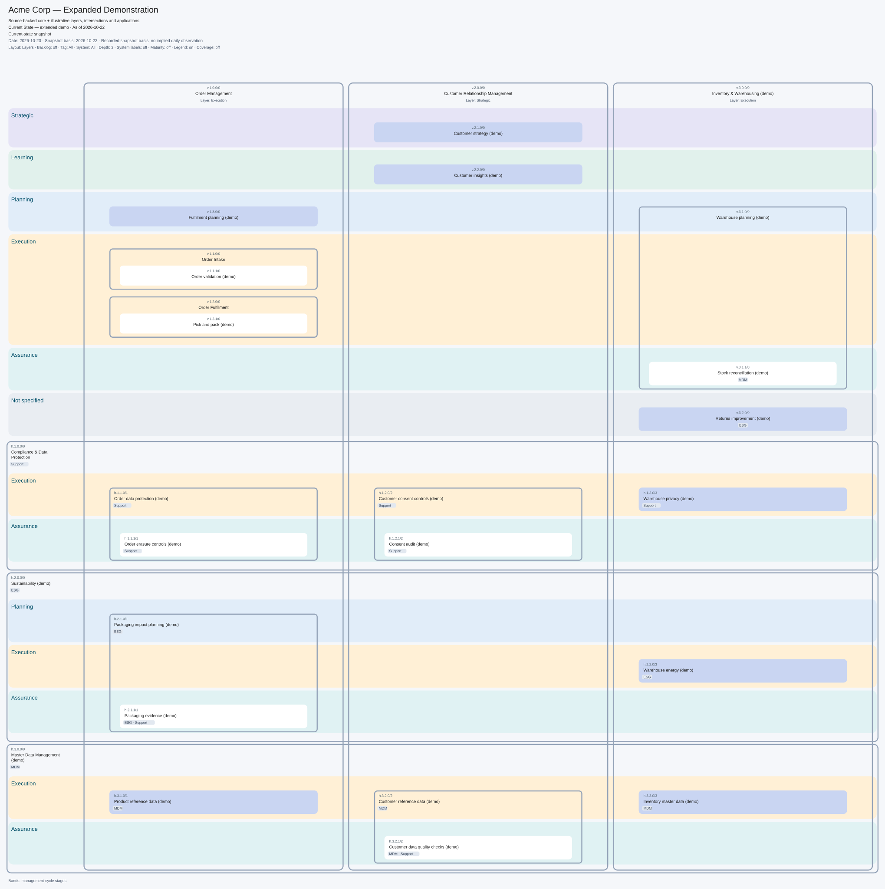
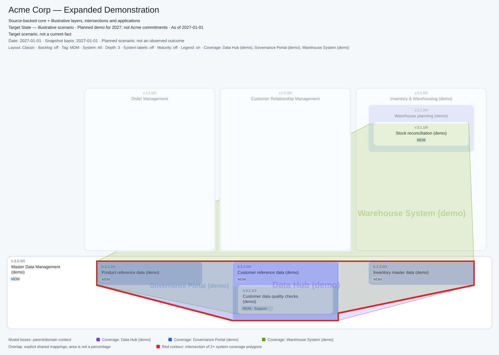

Business capabilities, system coverage and time
See what the business can do, how its systems support that work, and which state of the organisation you are looking at.
By Valerii Korobeinikov · · 6 min read
One map, several useful questions
A capability map names the abilities an organisation needs: order management, customer relationship management, fulfilment planning, data quality control. It gives a stable structure for discussing change even when teams, processes and applications are being reorganised.
The same structure can answer different questions. Which abilities belong together? Which help set direction, plan work, execute it or check results? Which systems support them? What was different last quarter, and what is only planned for next year?
The standalone capability-map skill turns explicitly supplied data into an interactive HTML file and a native vector image. The HTML works locally in a browser; Python 3 generates it without a server or external rendering service.
Acme Corp is a teaching example. Its source-backed core comes from the public Acme model; added capabilities, classifications, technical mappings and historical/planned scenarios are illustrative. The diagram keeps these disclosures visible. It does not describe a measured deployment.
Keep the business structure readable
Level-one vertical capabilities form domain columns. Their level-two and level-three capabilities sit inside the relevant parent, with enough width for their names. Horizontal capabilities form bands across domains; explicit intersection boxes show where their more specific abilities apply.
For example, Order Management is a domain. A horizontal data-management capability can contain separate abilities for order, customer and inventory data. Its identity and hierarchy matter independently of whether those boxes also carry the tag MDM, meaning master data management.
The classic layout emphasises this structure. Turning on Sort by layers arranges explicitly classified abilities into coloured zones while keeping their parent frames and horizontal intersections.

Five stages describe the role of an ability
The stage classification adapts Plan–Do–Check–Act with an explicit Learning stage. Strategic planning belongs to Strategic; Planning describes tactical and operational planning. Strategic also includes significant changes to direction informed by what the organisation has learned.
| Our stage | Cycle correspondence | Examples of abilities |
|---|---|---|
| Strategic | Act + strategic Plan | Choose direction, set strategic priorities, redesign the organisation. |
| Learning | Learn | Research, reflect, retain knowledge and develop competence. |
| Planning | Tactical/operational Plan | Plan capacity, budgets, resources and schedules. |
| Execution | Do | Fulfil orders, run operations and maintain reference data. |
| Assurance | Check | Check quality, outcomes, controls and compliance. |
This is a way to organise a view, not a process sequence. Improvement can happen within every domain. A broad parent capability can remain unclassified while its children occupy different stages; a missing stage stays visibly unspecified.
Tags answer a different question. ESG (environmental, social and governance), MDM and Support describe subject affiliation or a supporting role. They appear on boxes and can filter the map. A tag neither creates a horizontal capability nor changes its stage. Neither classification is inherited automatically.
Show system coverage without inventing support
A system can link directly to a business capability. It can also expose a named technical ability with its own explicit business-capability mappings. Those two evidence paths remain distinct, even when they lead to the same box.
Select one or more systems and enable Coverage polygons. Each system receives a translucent polygon and a name inside it. The example lets you compare Data Hub, Governance Portal and Warehouse System over reference-data abilities.

Use Functional overlap to outline that shared geometric region in red. It is a prompt for investigation: two systems near the same business ability may perform complementary work. The contour alone proves neither duplicate functionality nor a reason to retire a system. Polygon area is not a coverage percentage, and an absent link means support has not been specified.
Switch between angled and rectangular polygons, then round their corners independently. These choices change presentation, not mapping facts. System labels, coverage and backlog are optional; labels expand boxes only when shown.
Choose a date and keep plans visibly separate
The timeline moves through explicitly supplied state periods. In the Acme teaching example, you can inspect a historical period, the current demonstration and a planned 2027 scenario. Capabilities, maturity assessments and system mappings change at their stated boundaries.
A selected date is not the date on which evidence was observed. A plan does not become an observed result just because its date has passed. The example therefore keeps the selected date, snapshot basis and scenario kind separate. Dates outside the supplied periods show no data rather than extending the last known state.
Try this route through the download:
- Open the extracted HTML. Compare the classic layout with Sort by layers.
- Select the MDM tag and Data Hub, Governance Portal and Warehouse System. Enable coverage and overlap.
- Move between October 2026 and January 2027. Read the current/planned caption as mappings change.
- Enable Diagram only and Fit to screen. Restore controls, then download the exact visible SVG.
Use it with your own model
The skill download contains agent instructions, a human README, renderer, input contract, tests and source/illustration notes. Copy the folder into an Agent Skills host or run the renderer directly:
python3 scripts/render.py assets/example.json capability-map.html
python3 scripts/render.py assets/example.json capability-map.svg --no-backlogReplace the example with an explicit JSON projection of your source model. The renderer does not ingest native Transitrix YAML or edit DSM/Studio. The core methodology correction is merged but not yet part of a tagged release; the bundled mapping notes identify its revision and the limits of released validators. A successful render does not establish source-model validity.
The downloadable HTML contains all supplied snapshots. Its filters are presentation controls, not a way to remove sensitive source data before sharing. The provided demonstration uses public and synthetic teaching data.
Browse the skill source and README. Read the capability modelling guide, inspect the Acme source revision, or verify the downloads against their SHA-256 checksums.